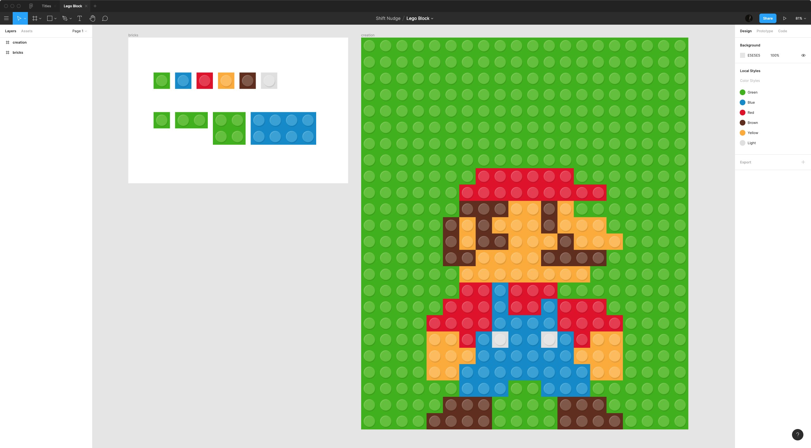

<!-- index.html -->
{% extends "templates/layout.html" %}

<!-- //START page variables -->
{% set page_title = "Accueil" %}
{% set page_desc = "" %}
{% set body_class = "js-inlinesvg" %}
{% set css_page = "app" %}
{% set css_min = false %}
{% set js_base = true %}
{% set js_min = false %}
<!-- //END page variables -->


<!-- //START page Content -->
{% block page_content %}

	<div id="content" class="" role="main">
		
		<p class="test">Hello world</p>
    <p>Data : {{ img_path }}</p>
    
    {% set svg = {width:"50", height:"50"} %}
    {% include 'assets/icons/cross.svg' %}

  </div><!--//END main -->
	
{% endblock %}
<!-- //END page Content -->
